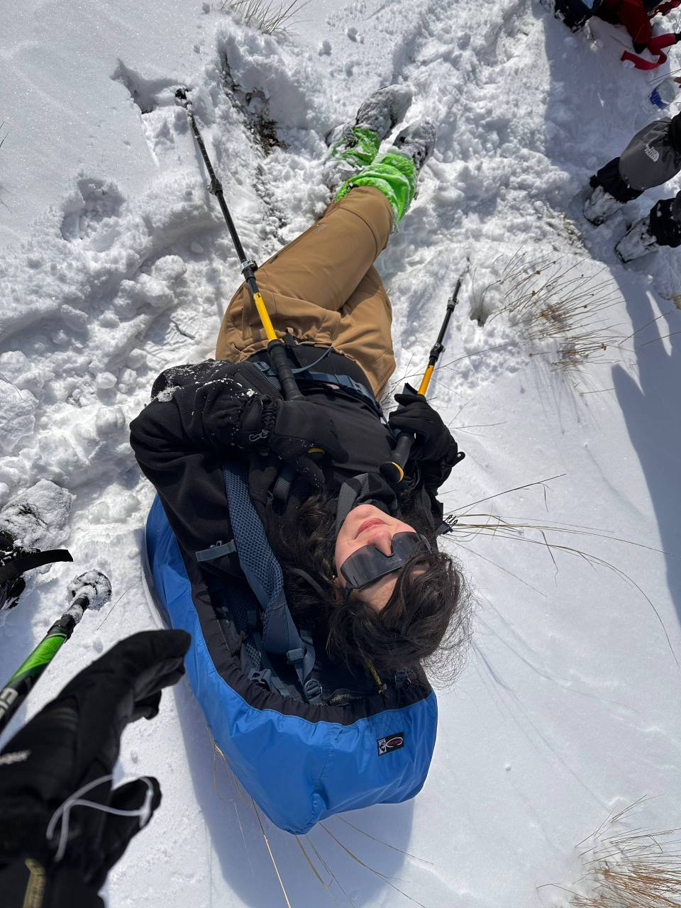

Software Developer at Steel Alborz, building software with Python.
Hello, welcome :)
I build intelligent software.

Software Engineer · Python
Focused on NLP, Computer Vision & data-driven systems.
I’m a software developer currently working with Python at Steel Alborz. My background spans computer engineering, systems architecture, deep learning, image processing, text and video processing, and reliability-aware intelligent systems.
PythonNLPComputer VisionDeep LearningTime Series
M.Sc. in Computer Engineering — Systems Architecture, Sharif University of Technology.
Text, image, video and time-series problems where software meets intelligent systems.
Contact
Want to talk software, NLP, computer vision or a technical project?